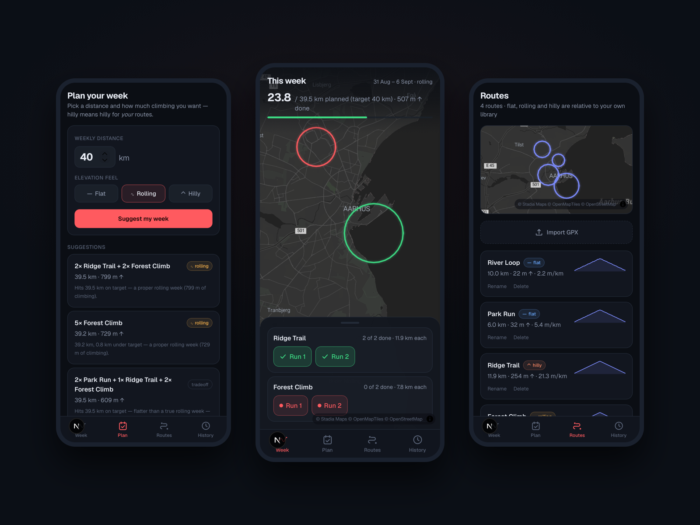

Project
Loops
Overview
Like most runners, I don't actually run new routes. I run the same handful of loops from my front door, over and over. But every training plan app assumes the opposite: it hands you distances and expects you to invent a route for each one. Loops flips that around. It plans your week from the routes you already run.
You import your regular routes as GPX files, tell Loops how many kilometers you want this week and how much climbing you're in the mood for, and it suggests combinations of your own loops that hit the target. Flat, rolling, and hilly aren't absolute categories — they're relative to your own library, so "hilly" means hilly for you.
The interaction design centers on a dark map of your city. Your week lives there as glowing route lines: red for runs still waiting, green for the ones you've done. Checking off a run is a single tap in the bottom sheet, and watching your map turn green over the week became the little reward that keeps the plan honest.
I designed it mobile-first as an installable PWA, since the only place a training plan matters is on your phone, right before you head out the door. History keeps score week by week — planned versus completed — with no streaks, no badges, and no guilt mechanics. Just a quiet record of what you set out to do and what you did.
